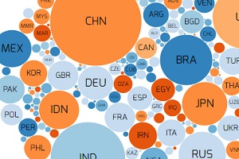
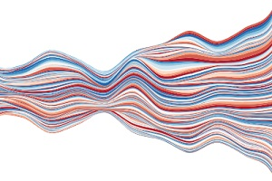
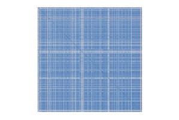
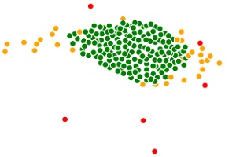
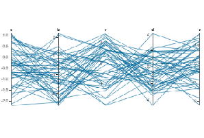
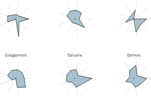

Stream Graph
A variation of a stacked area graph, which can display the changes in data over time through the use of flowing, organic shapes.
Link

Correlation Matrix
Visually displaying large correlation matrix can exhaust your browser. Test with 400 variables.
Link

Correlation as network
Tranforming correlation matrix into distance matrix, alowes compact representation of large correlation matrix as network graph.
Link

Parallel Coordinates
Instead of drawing axes orthogonally (Cartesian coordinates), axes are drawn vertically scaled according to their value range. Interactivity enables to filter records and reorder variables
Link

Radar Chart
Radar charts can be a useful way to display several observations with limited number of variables.
Link